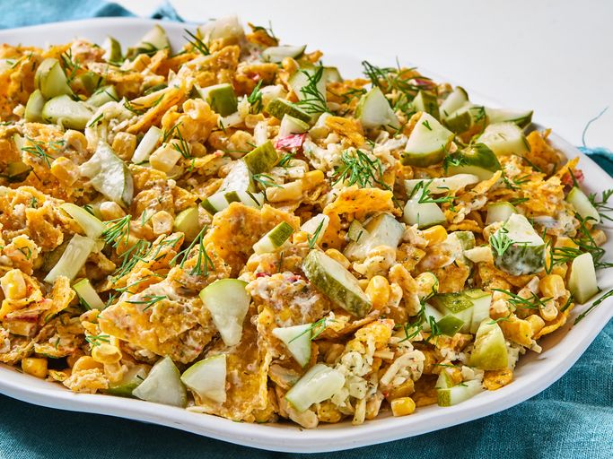

Home
Pickle Dorito Salad

This Pickle Dorito Salad is an exciting mix
of crunchy and creamy textures, salt, vinegar,
and dill pickle flavors. It's not your usual
picnic salad!
Ingredients
- Dressing
- 1 cup mayonaise
- 1/2 cup sour cream
- 2 tablespoons ranch seasoning
- 2 tablespoons pickle juice
- 1 tablespoon chopped fresh dill, or more to
taste, plus more for serving.
- Salad
- 1 9.25oz bag Cool Ranch Doritos, slightly crushed
- 1 can corn, drained
- 1 can Mexicorn or corn with bell peppers, drained
- 1 1/2 cups diced pickle spears
- 1 1/2 cup shredded pepper jack or dill havarti cheese
Steps
- In a small bowl, whisk together mayo, sour cream,
ranch seasoning, pickle juice, and fresh dill.
- Add Doritos, corn, Mexicorn, pickles, and cheese
to a large bowl. Pour in dressing and stir gently
until well combined. Garnish with additional dill
and serve immediately.
- Enjoy!